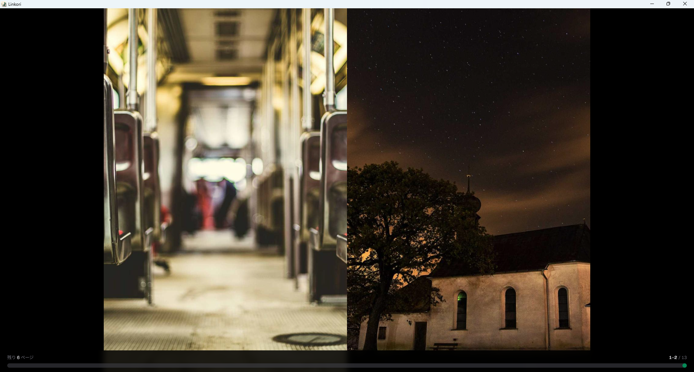
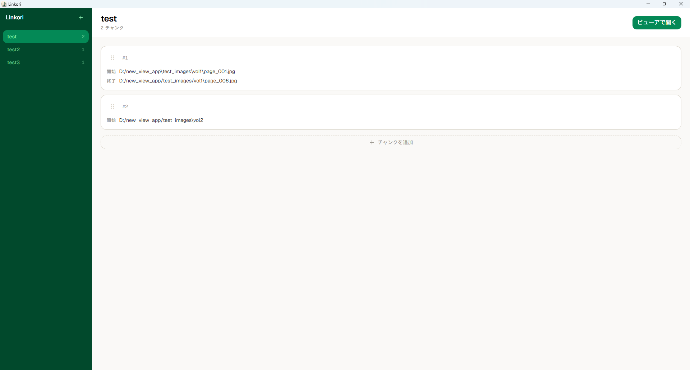
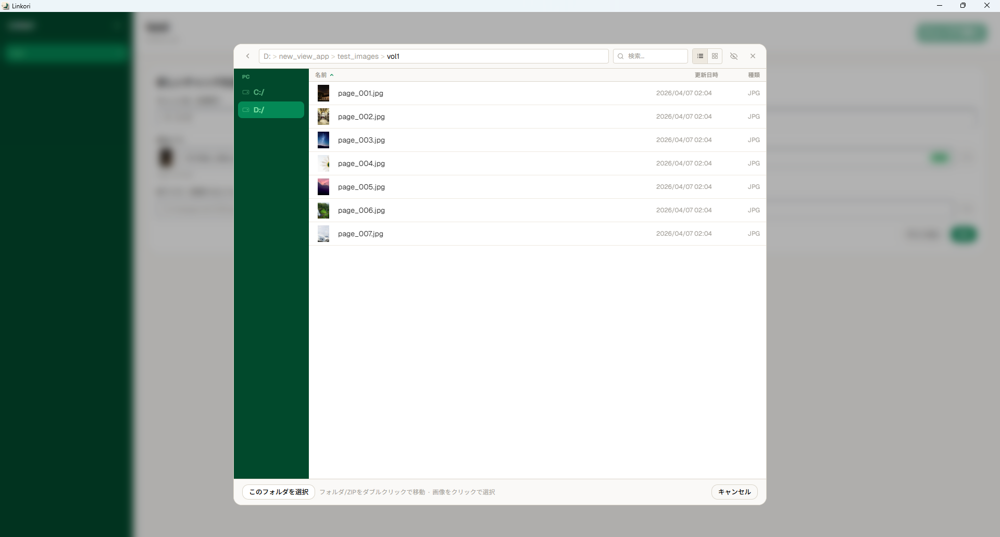

Linkori
Local manga & image viewer with playlist system.
v0.3.0Windows 10 / 11 (x64) — Free & Open Source (MIT)
Local manga & image viewer with playlist system.
v0.3.0Windows 10 / 11 (x64) — Free & Open Source (MIT)

Viewer — Spread mode with right-to-left reading

Playlist — Organize your reading with chunks

File Browser — Navigate folders and ZIPs
Folders, ZIPs, and playlists — all in one app.
Toggle between two-page spread and single-page mode. Right-to-left reading for manga.
Chain multiple folders and ZIPs into a single continuous reading session with chunks.
Navigate drives, folders, and ZIP archives with sorting, thumbnails, and grid view.
Viewer opens immediately. Images load on demand as you read — no waiting.
Read directly from ZIP archives including subdirectories. Shift-JIS filenames handled correctly.
Switch UI language between English and Japanese. Preference is saved across sessions.
Resume reading & snappy seek.
Automatically saves and restores your last viewed page and display settings (single / spread) per playlist. Persists across app restarts.
Thumbnails now generate outward from the current page. Already-loaded images are resized instantly in the browser — no IPC overhead.
Images are now served via a custom protocol handler instead of base64 IPC. Lower memory usage and faster rendering.
Click the eye icon on a chunk card to browse its images as thumbnails before opening the viewer. Image count badges on every card.
Windows 10 / 11 (x64)
WebView2 (built into Win 11, auto-installed on Win 10)
JPEG, PNG, GIF, WebP, BMP, TIFF
.zip / .cbz (including subdirectories)
Free, open source, and runs entirely locally.
Download the installer (.exe) or MSI from the GitHub Releases page.
No data is ever sent to external servers. Everything stays on your machine.
This software is provided "as is" without warranty of any kind, express or implied. The author shall not be liable for any damages arising from the use of this software. You are solely responsible for ensuring that your use of any content complies with applicable copyright laws. This application runs entirely locally and never transmits data to external servers.